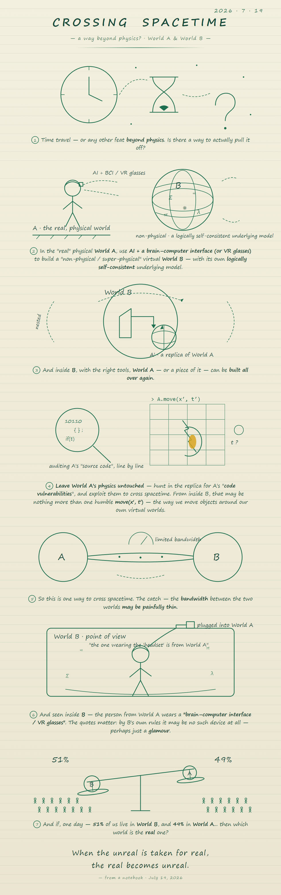
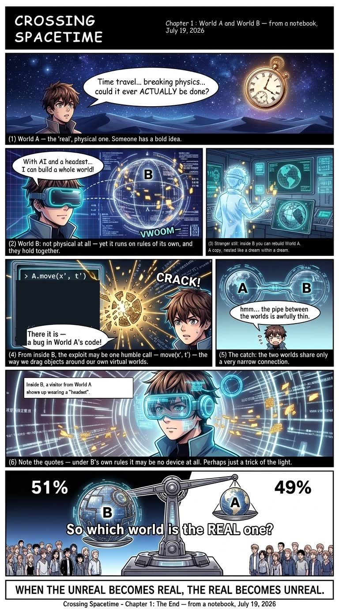

Every other page on this site describes something that was built. This one describes why. The whole city — the fusion plant, the quantum machine, the fab, the robots that see — traces back to a single handwritten page, and to one question it ends on: which side is real?
July 19, 2026. One page, two worlds, four moves.
The note sketches a game in four moves. Build World B inside World A — a world detailed enough that its inhabitants can live in it. Let them build World C inside B — because that is what inhabitants of a good enough world do. Watch what they discover while building — every shortcut they take is a shortcut their own world might be taking. And then go hunt for those shortcuts at home: numerical corner cases, suspicious constants, rendering that gets lazy when nobody looks.
One rule survives every retelling: in World B, the interface people wear is written as the “headset” — always in quotes. By B's own rules, nobody inside B can verify that the thing on their face is doing what it claims. It may be the interface. It may be a decoy. The quotes are not punctuation; they are epistemology.

Seven panels, ending on a census and a crack.
The manga version compresses the page into seven panels: the build, the nesting,
the “headset”, the crack-hunt — and then the two panels that earned their
place late. Panel seven asks the census question: if 51% of residents now mainly
live in B and 49% in A, which world is the annex of which? And the CRACK panel
carries the sharpest line on the page: the exploit, if it exists, is probably not
dramatic. It is one humble function call — move(x′,t′) —
the same call we use to manipulate the virtual worlds we build. Spacetime travel in A
might just be B's API, called from the inside.

The ledger of this district is different: not simulations, but sightings — where each element of the page now physically stands in the city.
| On the page | In the city | Lives in |
|---|---|---|
| World B, built inside A | The city itself — the whole twin is the sandbox of the experiment | viewer/ (the engine and 24 assets) |
| The 51% / 49% census | The World-B lounge: three recliner pods and the census sign in the residential quarter | viewer/units/hab-quarter-01.js |
| The “headset” (quotes mandatory) | On each pod cradle rests the “headset” — the knowledge card keeps the quotes, and states it may be a decoy | viewer/units/hab-quarter-01.info.json (pods card) |
| The skyline of B | A live wall screen in the lounge showing a city that is not this one | hab-quarter-01 · G.bCity emissive skyline |
move(x′,t′) |
Written on the lounge card as a hypothesis — flagged as page one of the notebook, not a simulation result | hab-quarter-01.info.json (sim field, quoted as such) |
| The crack-hunt method | The city's own verification culture: contract validators, layout audits, adversarial reviews — cracks hunted on purpose, in-world | scripts/validate_units.mjs · scripts/audit_layout.mjs |
| The comic itself | Both language versions ship with the repository and headline its README | idea/manga-en.jpg · idea/manga-cn.png |
Even a one-page idea took rework. The honest list:
The English comic was hard to read. The first translation kept the Chinese caption rhythm — clipped fragments, ornament words. Readers bounced. The fix was a full rewrite into plain full sentences, plus four layout repairs where the new, longer text clipped its bubbles (panel 1, the VWOOM caption, panel 4, and the panel-7 question crowding the crowd art).
The interface rule was corrected twice. First draft said the interface was a brain-computer link; correction one allowed a wearable. Correction two was the deep one: what matters is not the hardware but the quotes — inside B, the “headset” cannot be verified from within, so it must always be written as a claim, never a fact. That rule now binds every card and page that mentions it.
The CRACK panel shipped incomplete. The first version hunted cracks
but never said what finding one would mean. The move(x′,t′) line —
that the exploit is one humble call, the way we already manipulate our own virtual
worlds — was added in a second pass, and panel seven's census question with it.
The two late panels are now the ones people quote.
The lounge is a two-minute walk inside the twin.
Run the viewer (see the repository README), then open /viewer/?interior=hab-quarter-01 — or walk it properly: press U for the undercity, take the foyer's front-left door into the residential quarter, and find the three pods in the far corner past the dining tables. Check the cradles: the “headset” is there, quotes and all. Then look at the blue skyline on the wall and decide, before the card tells you, which side of it you are standing on.